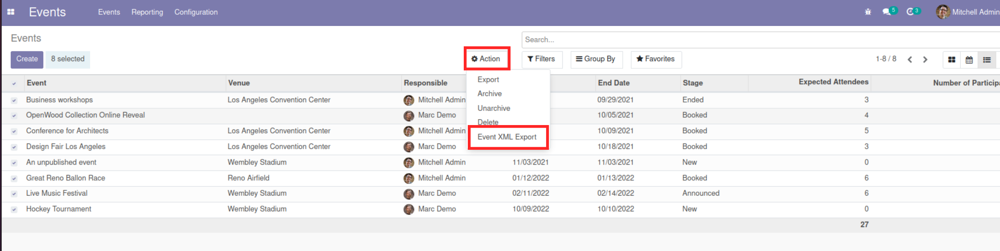
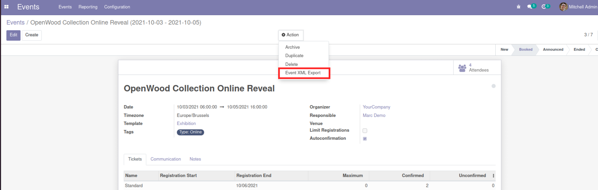
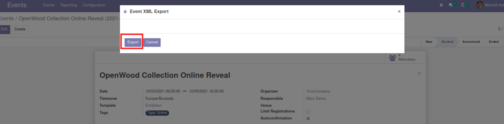
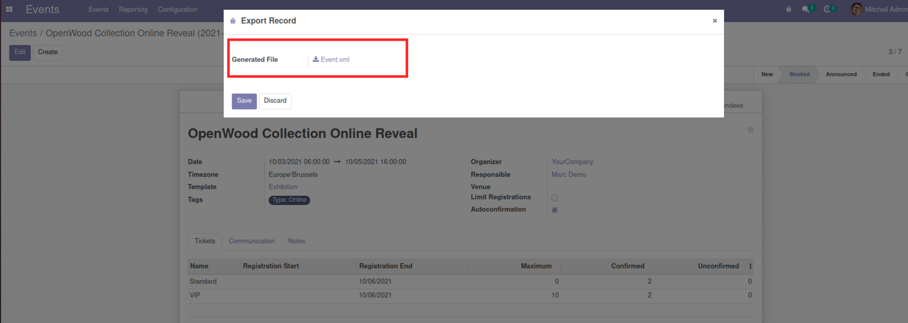

This module allows you to export records in XML format, so that it can be used for your consumption and probably import back to Odoo
XML Export from Tree View
Exporting from Tree view gives you the freedom to select as many record as you want and the report will be generated as fast as possible
XML Export from Form View
Exporting from Odoo Form view allows you to generate XML report from a single record
XML Export Action View
This is what you see when you click on the XML Export Action and you can click on Export
XML Export Action Result
When you click on Export, this is what you see
XML Export Result
This is a screenshot of what to expect when you export the record to xml and download
